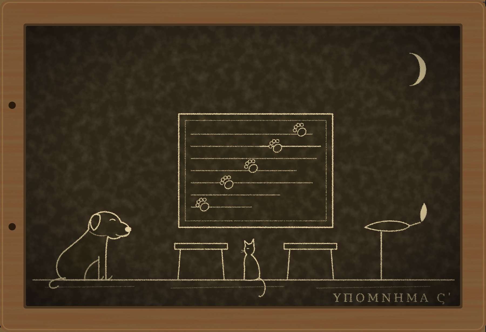

Гипомнема VI Напоминание

I
Стражи слов никогда не повторяют хранимое в одиночку. Человек, который твердит клятву сам себе, через год говорит её так, как ему удобнее, и не замечает этого, как не замечает своего запаха. Поэтому каждому стражу дают пару. Каждый вечер пара садится друг против друга, один произносит, другой слушает, потом меняются. Ошибку в чужих устах слышно сразу, в своих её не слышно никогда. На этом обычае держится коллегия, и я двадцать лет считал его самым разумным из всего, что придумали люди.
Никанор пришёл, как обещал, назавтра после того разговора, на закате. Он сел на табурет, сложил руки на коленях, как сидят стражи, когда собираются запоминать, и сказал:
— С первого дня.
Ферокс подошёл к нему, положил голову на колено и тут же убрал, почувствовав, что сегодня не время. Пами остался на балке.
Я начал с учителя. Его звали Аполлоний, он был старейшим из составителей формул, и в коллегии говорили, что формулу Аполлония обойти нельзя, её можно только забыть. Я учился у него с шестнадцати лет. Своих учеников он заставлял переписывать клятвы на воске и тут же стирать написанное, чтобы мы видели, как легко исчезает буква и как трудно слово, которое произнесено при свидетелях. Об этом я рассказал Никанору подробно, потому что от этого зависит всё остальное.
— Весной двести двадцать шестого года, — продолжал я, — Аполлоний объявил коллегии, что на ближайшем собрании скажет нечто о природе кары. Так и сказал, не прибавив ни слова. Коллегия ждала двенадцать дней. На одиннадцатый день оспорили клятву Гельвии, вдовы сенатора.
Клятву эту Аполлоний составил за три года до того. Гельвия поклялась, что вернула наследникам мужа всё, что получила от него. Хранили клятву двое: я, как старший, и младший страж, которого я сам когда-то привёл к Аполлонию. Наследники через три года нашли у вдовы имение, отписанное ей по завещанию, и вспомнили о клятве.
— Я произнёс её перед претором так, как помнил, — сказал я. — «Всё, что я получила от мужа при жизни его, я вернула его наследникам». Три слова, «при жизни его», и через них ушло имение. Завещание вступает в силу после смерти. Формула с такой щелью стоит дороже имения, а продавший её страж подлежит смерти, потому что он продаёт то, на чём стоит Рим.
— Аполлоний отрицал?
— Он сказал, что этих слов в формуле не было. Гельвия сказала то же. А я поклялся у Дия Фидия, что помню формулу так, и помнил. Второй страж подтвердил молча, как полагается младшему, когда клянётся старший. Учителя казнили на девятый день.
— До луны.
— Слову стража не нужна луна, так тогда считали. После луны поклялась Гельвия, что слов «при жизни его» в её клятве не было, и дожила до следующего серпа. Я тоже дожил. Две клятвы, противоречащие одна другой, обе устояли. Коллегия рассудила, что лгать мы не могли оба, значит, один не лгал, а ошибся. Ошибся страж, у которого память оказалась нечиста. Меня изгнали.
Никанор слушал, не двигаясь.
— О природе кары Аполлоний так ничего и не сказал, — добавил я. — Двенадцать лет я думал, что он хотел сказать коллегии то, что теперь знаешь ты.
II
Я замолчал, и Никанор некоторое время тоже молчал, складывая услышанное, как складывают стражи: по порядку, с местом для каждого слова.
— У клятвы два хранителя, — сказал он наконец. — Если тебе подменили память, второй должен был возразить. Он не возразил. Значит, у вас обоих была одна и та же неверная формула. Две головы одинаково не ошибаются.
— Или вторая не ошибалась.
— Кто был вторым?
Я ответил не сразу, и Пами на балке открыл один глаз.
— Евмен. Младший брат моей жены. Мальчишкой он жил у нас, и Аполлонию его привёл я, потому что жена просила. Мы были парой восемь лет. Каждый вечер он садился против меня за этот стол, — я показал на стол, хотя стол был другой, — и мы повторяли всё, что хранили, по очереди.
Жены у меня нет давно, и о ней я в этих табличках писать не стану. Скажу только, что после двести двадцать шестого года её брат в наш дом больше не приходил, и я считал, что он стыдится родства с изгнанным.
— Как он сидел? — спросил Никанор.
— Как все. Как ты сейчас.
— Руки?
Я посмотрел на его руки, сложенные на коленях, и понял, о чём он спрашивает, раньше, чем он договорил.
— На коленях, — сказал я. — Он никогда ничего не повторял дважды, даже за столом. Попросишь передать соль, а он уже передал и не отвечает. Мы смеялись над этим. Жена говорила, что из него выйдет лучший страж в Риме, потому что он и дома живёт так, будто его слушает претор.
Никанор встал, прошёлся по комнате и остановился у окна.
— Похоронщик Трифон, — сказал он, глядя на улицу. — Трибун Приск. Меняла Сатурнин. Человек со сложенными руками, который ничего не повторяет дважды, а чужую речь повторяет с чужими запинками. Знает тебя давно. Был под Аквилеей при посланном от сената. Ты записал все эти приметы на табличке, и ни разу за год не спросил себя, кого из стражей учили сидеть именно так.
— Так сидят все стражи.
— Все. Но не все за обедом не повторяют слова, когда их просят передать соль. Ты сам это сейчас рассказал и сам посмеялся. А Трифону он повторил его пересказ целиком, с его же запинками. Так делают за столом, когда сидят в паре, а дома живут так, будто их слушает претор.
Я ничего не ответил. Двадцать лет я сидел против этого человека и считал его привычки детской робостью.
— Ты двенадцать лет не видел его, потому что он был свой, — сказал Никанор. — Своих не запоминают. Их не за что запоминать.
Когда он ушёл, Пами спустился с балки и сел на стол передо мной.
— Ты говорил о нём долго, — сказал кот. — Мальчишка, брат жены, пара, сидел вот так. Имя ты назвал, только когда он спросил. Так говорят о тех, кого боятся назвать.
— Я двенадцать лет не произносил этого имени.
— Я знаю, — сказал Пами. — Я бы заметил.
III
Через три дня Никанор пришёл снова и привёл Диодора.
Диодор молод, любопытен и с прошлого лета хранит вместе с Никанором присягу гвардии Августу Гордиану. Он хранил и мою клятву о Гермогене, и с тех пор, встречая меня в базилике, кивает, чего другие стражи себе не позволяют.
— Повтори ему то, что повторял мне вчера, — сказал Никанор.
Диодор сел, сложил руки на коленях, как все мы, и произнёс присягу, ровно, с теми остановками, с какими её говорили десять когорт:
— «Я человек Императора Цезаря Августа. Его враги мои враги. Я не отнимал жизни у товарища по лагерю. Клянусь в этом перед знамёнами».
Я ждал продолжения и не сразу понял, что его не будет. Пами, лежавший на столе, поднял голову.
— Имени нет, — сказал он. — Ты тогда сказал длинное имя. Марк, ещё что-то, Гордиан. Я лежал на твоей табличке и слышал. Этот имени не говорит.
Пами никогда не запоминает того, что ему не нужно. Но в ту ночь он получил рыбу за слово «кровь» и, как видно, решил, что за формулу присяги рыбу дают и впредь.
— Ты пропустил имя, — сказал я Диодору.
— Какое имя?
— «Марка Антония Гордиана».
Он посмотрел на меня так, как смотрят на человека, который заговорил о погоде на похоронах.
— Формула короткая. «Император Цезарь Август». Имени в ней не было, его произносит тот, кто клянётся, если хочет. Так её читали когортам, так говорили когорты.
— Так её говорили когорты? Или так её теперь говоришь ты?
Диодор открыл рот и не ответил. Стражей учат не отвечать, пока не проверили память, и он проверял. Я видел, как он прислушивается к себе, как прислушиваются к шагам на лестнице, и как ничего не находит.
— С кем ты повторяешь с зимы? — спросил Никанор, хотя знал ответ.
— С Феоном. Его прислали с Палатина после Сатурналий. Коллегия решила, что присягу Августа нельзя оставлять на двух молодых, тем более что один из них, — Диодор посмотрел на Никанора, — после дела иудеев у старейшин не в милости. Феон старший. Он хранит дворцовые формулы. Мы повторяем каждый вечер, у меня дома.
— Кто говорит первым?
— Он. Старший всегда говорит первым.
— Ты говоришь иначе, чем он?
— Я говорю так же. В этом и смысл.
Никанор посмотрел на меня через голову Диодора. Мы оба думали об одном и том же: о столе, за которым два человека каждый вечер садятся друг против друга, и об одном из них, который всегда говорит первым.
IV
Диодор остался ужинать, и за ужином я расспросил его о Феоне так, как расспрашиваю свидетелей: не о том, кто он, а о том, что он делает.
Феон приходит в первый час ночи. Он немолод, вежлив, говорит тихо. Он не поправляет Диодора никогда. Если Диодор ошибается, Феон просто произносит формулу снова, с начала, своим голосом, и Диодор повторяет за ним, пока не скажет так же. Иногда Феон произносит её не своим голосом, а голосом Никанора, каким тот читал её когортам на вечернем построении, чтобы Диодор помнил, как она звучала у знамён. Передаёт он этот голос так хорошо, что Диодору иногда кажется, будто напротив сидит Никанор.
— Он говорит голосом Никанора и без имени? — спросил я.
— Никанор на построении читал без имени, — ответил Диодор и посмотрел на Никанора. В голосе его не было сомнения.
Тогда я понял, как это было сделано со мной. Подменить память стража нельзя ни подкупом, ни угрозой. Её можно подменить только тем же способом, каким её создают: повторением. Год за годом человек, который всегда говорит первым, произносит формулу на три слова длиннее или на три слова короче, и каждый раз голосом того, кто её составил. Никакого обмана в отдельный вечер нет, разница слишком мала, чтобы её заметить. А через год в памяти лежит только одна формула, и голос, которым она звучит, принадлежит учителю. Я слышал «при жизни его» голосом Аполлония. Я и сейчас слышу его голосом.
Восемь лет за одним столом. Евмен всегда говорил первым, хотя был младше. Я позволял ему это, потому что он робел и я хотел его ободрить.
— Зачем Феону имя? — спросил Диодор, когда Никанор объяснил ему, что с ним делают. Он не обиделся и не испугался, он думал, и я снова пожалел, что учил не его.
— Присяга живому человеку умирает вместе с ним, — сказал я. — Летом гвардия это проверила на двух Августах. Солдат, который сказал «я человек Гордиана», свободен в тот час, когда Гордиана не станет, и никто в Риме не может заставить его горевать об этом. А солдат, который сказал «я человек Августа», остаётся человеком Августа при любом Августе. Убив одного, он сразу становится человеком следующего и врагом самому себе. Такую присягу нельзя пережить, её можно только сдержать.
— Это лучше, — сказал Диодор.
— Это лучше, — согласился я. — Мальчику на Палатине тринадцать лет, и за весь прошлый год ни один Август в Риме не умер своей смертью. Если бы такую присягу дали когорты, у мальчика был бы шанс дожить до бороды.
— Но когорты её не давали, — сказал Никанор.
— Не давали. Они сказали имя. Я сам составлял эту формулу и сам вписал в неё имя, потому что так положено. Теперь в Риме двое стражей, которые хранят присягу. Если их память разойдётся, коллегия спросит старшего. Старший на Палатине, и через месяц у когорт будет присяга, которой они не давали, но которую они дали, потому что так помнят стражи.
— Через десять дней, — сказал Диодор. — В мартовские календы префект приводит к присяге новобранцев. Формулу им прочтут стражи, то есть я и Никанор. А если мы разойдёмся, Феон.
V
Ночью Ферокс не спал и ходил по комнате, стуча когтями. Он чувствует, когда я не сплю не по своему расписанию.
— Ты сидишь над полом, — сказал он.
Я действительно сидел над половицей, под которой лежат мои таблички. Двенадцать лет я пишу то, что не должен писать изгнанный страж: дела, клятвы, чужие кары. В ту ночь, когда я составлял присягу для гвардии, я записал её на воске, как записываю всё, что составляю, и положил под половицу, не перечитав. Аполлоний учил нас писать и стирать. Стирать я разучился.
Табличка лежала там, где я её оставил. Я поднял её к лампе и прочёл: «Я человек Императора Цезаря Марка Антония Гордиана Августа. Его враги мои враги. На моих руках нет крови товарища по лагерю. Клянусь в этом перед знамёнами». Ниже, моей же рукой, стояла поправка: «крови» зачёркнуто, а под строкой написано «Я не отнимал жизни у товарища по лагерю». И поперёк всего, от имени Августа до слова «лагерю», шёл след кошачьей лапы, глубокий и ровный, пять отпечатков подряд. Воск в ту ночь был мягкий от лампы, а Пами, получив свою рыбу, ушёл со стола по самой короткой дороге.
Я сидел над этим следом долго. Память можно подменить повторением. Табличку можно стереть и написать заново, и любой, кто захочет, скажет, что изгнанный страж написал сегодня то, что ему выгодно. Но заново вдавить в воск след кота, который прошёл по ещё мягким буквам, нельзя. Чтобы стереть имя, пришлось бы стереть лапу.
Я не знал, хочу ли я это показывать. Предъявить табличку значило сказать коллегии, претору и префекту, что изгнанный страж пишет, и не одну эту табличку, а двенадцать лет. Об этом через день узнала бы вся Субура, а через три дня тот, кто послал Феона. Но не это меня держало. Меня держало то, что Евмен был прав. Присяга званию лучше присяги мальчику. Я двенадцать лет записывал на табличке смерти, которые Рим принял за кары, и почти все они случились оттого, что клятва связывала человека с другим человеком, а не с местом в Риме. Евмен чинил ту самую прореху, которую я видел лучше всех.
И чинил тем же способом, каким убил Аполлония.
Утром я сказал об этом Никанору. Он выслушал и ответил не сразу.
— Ты опять решаешь за других, что им лучше, — сказал он. — Месяц назад ты решил, что городу лучше, если я поверю тебе. Теперь решаешь, лучше ли когортам присяга, которой они не давали. Ты и он думаете одинаково. Разница в том, что он не мучается.
— А ты что решил бы?
— Я страж. Я храню то, что сказано. Если когортам нужна другая присяга, пусть им её прочтут, и пусть они её дадут. Тогда я буду хранить её. Но я не стану хранить то, чего они не говорили, только потому, что так было бы лучше.
Ферокс в это время грыз ножку табурета, что ему запрещено, и я не стал ему запрещать.
VI
Коллегия собралась в Юлиевой базилике накануне мартовских календ, в том самом углу за колоннами, где двенадцать лет назад меня объявили человеком с нечистой памятью. Пришли старейшины, пришёл Феон, пришли Никанор и Диодор. Меня пустили по просьбе Никанора, и старики смотрели сквозь меня, как раньше.
Феон оказался седым, круглолицым и приветливым. Руки он держал на коленях, как все мы, и я поймал себя на том, что смотрю на них дольше, чем на лицо.
Старейший спросил Диодора, как звучит присяга. Диодор произнёс её без имени, голосом Никанора. Старейший спросил Никанора. Никанор произнёс её с именем. Феон, не дожидаясь вопроса, произнёс без имени, точно голосом Диодора, и я понял, что ему всё равно, чьим голосом говорить.
— Двое против одного, — сказал старейший. — И старший с двумя.
Тогда я положил табличку на скамью перед ним.
В углу за колоннами стало тихо, как не бывает в базилике. Старики смотрели на воск так, как смотрели бы на голого человека в курии. Один из них сказал, что это подпорка для слабой головы и в коллегии ей не место. Другой сказал, что изгнанный страж, который пишет, хуже изгнанного стража, который лжёт, потому что лжеца хотя бы проверяют боги.
— Я не прошу считать это памятью, — сказал я. — Я прошу посмотреть на след. Здесь имя Августа, и поперёк имени прошёл кот. Это было в ночь, когда я составлял формулу, за три дня до присяги, при свете лампы. Если бы я вписал имя сегодня, кот прошёл бы по пустому воску.
— Кот, — повторил старейший.
— Египетский. Он и сейчас жив и за рыбу пройдёт ещё раз, если коллегии нужно сравнить.
Феон усмехнулся. Диодор не усмехнулся. Он смотрел на табличку, наклонившись, как смотрят на воду, и губы его шевелились. Он читал, а стражи слов читают медленно, потому что не любят этого делать.
— «Марка Антония Гордиана», — проговорил он, и вдруг произнёс всю присягу целиком, с именем, но не своим голосом и не голосом префекта, а моим. Таким, каким я говорил её у себя в комнате, когда он и Никанор пришли наутро, и каким он повторил её за мной в первый раз.
— Я это помню, — сказал он, не поднимая головы. — Вот так. Мнесарх говорил первым, и я помню, как он дышал перед словом «Гордиана». Это было до Феона. Я не помнил, что помню.
Старики молчали. Слово, которое помнят два стража, уже нельзя взять назад, и на этом стоит всё наше ремесло. А тут два стража сказали одно и то же, и третий, старший, остался один.
Феона спросили, откуда он взял формулу без имени. Он ответил, что так её читали когортам, и сослался на память Диодора. Его попросили поклясться в этом у Дия Фидия. Он сказал, что отказ не запрещён, и попросил разрешения уйти, потому что его ждут на Палатине. Его отпустили. Арестовать стража за то, как он произносит формулу, коллегия не вправе, а претор в этот угол базилики не заглядывает.
Когда он ушёл, Никанор спросил старейшего, кто прислал Феона к Диодору. Старейший ответил, не задумываясь, потому что старейшие помнят всё: Феона приписали к Палатину два года назад по представлению стража, состоящего при дворе по части формул. Имя этого стража старейший тоже назвал.
Табличку мне вернули. Старейший, отдавая её, сказал, что коллегия запомнит этот день, и это было сказано не в мою пользу.
VII
Наутро после календ новобранцы гвардии дали присягу Императору Цезарю Марку Антонию Гордиану Августу. Формулу им прочли Никанор и Диодор, по очереди и одинаково. Феона в Риме больше не видели. Говорят, его отправили с поручением на восток, где у дворца теперь много дел.
Никанор пришёл вечером, сел на табурет, и Ферокс, на этот раз не спрашивая позволения, положил ему голову на колено.
— Ты мог промолчать, — сказал Никанор. — Присяга званию лучше. Ты сам так сказал.
— Мог.
— Почему не промолчал?
— Потому что так убили Аполлония. Не формулой, а тем, что один человек решил за других, что они помнят. Евмен прав в том, чего хочет. Но если я соглашусь с ним сейчас, то двенадцать лет назад он тоже был прав, а этого я сказать не могу.
Никанор подумал.
— Месяц назад ты сделал то же со мной.
— Да. И поэтому знаю, как это выглядит изнутри.
Он посмотрел на мои руки. Я сидел, сложив их на коленях, как научил меня Аполлоний, и, заметив его взгляд, убрал их. Он ничего не сказал. Потом назвал меня по имени, впервые за двадцать лет, и спросил, есть ли у меня ещё таблички, кроме этой.
— Двенадцать лет, — ответил я.
— Тогда я хочу их прочесть. Медленно. Мне надо знать, чьи ещё клятвы мы храним так, как Диодор хранил эту.
Мы читали до третьей стражи. Пами получил рыбу за лапу, на этот раз, по его мнению, мало. Ферокс уснул у Никанора на ногах, и Никанор не стал его будить.
Когда он ушёл, я достал табличку «Чужие кары». Под приметами человека со сложенными руками стояло пять строк, и каждую я писал, не зная, о ком пишу. Теперь я знал. Шестую строку я написал коротко: «Евмен». Больше ничего не добавил, потому что ничего не нужно было добавлять.
Аполлоний говорил, что письмо даёт напоминание, а не память, и заставлял нас стирать написанное. Память у меня отняли один раз, а у Диодора её почти отняли. Напоминание отнять не удалось никому, потому что поперёк него прошёл кот.